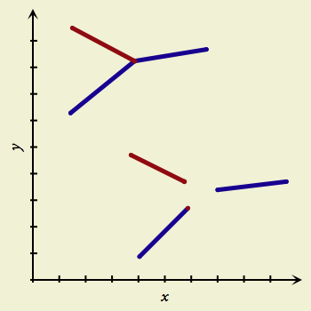

Attaching and Detaching Objects

If you draw a point on top of an existing line or point, or drag a point onto another object, the two objects snap together. So, subsequently moving one of the objects will bring the other one along for the ride, unless you detach them.
Note that dragging an entire line or fill into contact with another won’t attach them; you need to be dragging an individual point.
To detach a point that is snapped along a line, just drag the point away.
To detach objects that share a point:
- Select one of the objects. (To be precise about which connection to detach, select the particular point that the objects share.)
- Click the Detach toolbar button, or choose Detach from the Arrange menu.
- If you selected a whole object, all attachments that the object had are broken. If you selected an individual point, just the connection at that point is broken.